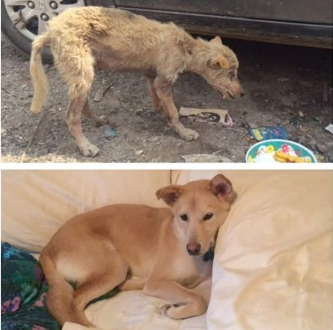
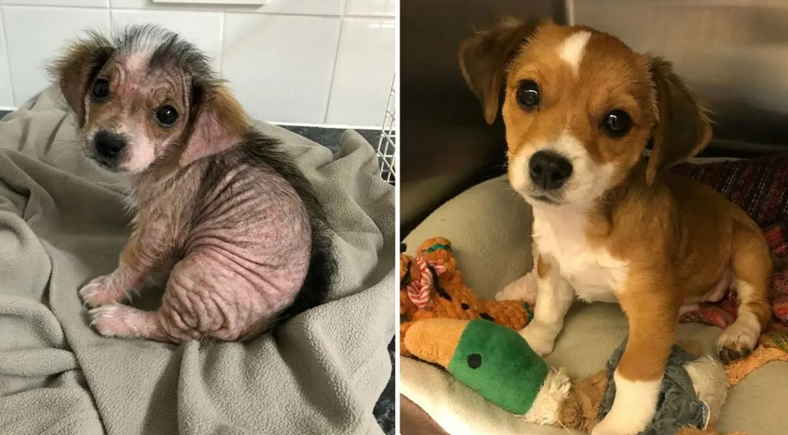
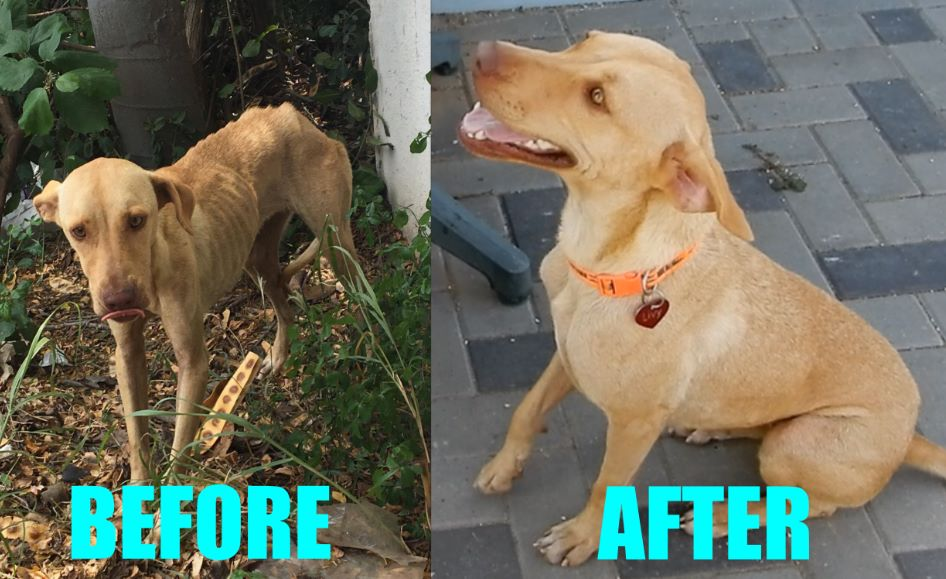

Pet Animal Welfare Society (PAWS) – +91 1800 11 5737
Animal India Trust – 93138 84347, 98112 52592, 011-5566 9924
SMART Sanctuary – +91 70427 23301
Karma Animal Foundation – +91 9811028965
Friendicoes – 070277 77951
Umeed for Animals Foundation – 099999 56541
Animals we rescue
Sick / Injured small animals of all species.
Homeless Females dogs for Sterilization
Cases pertaining to cruelty
Here's how You Can Participate
We believe that animals that do not belong to anyone belong to all of us and therefore
the
responsibility for their well being lie with each one of us and not just with an/any NGO/s / Govt. Deptt.
On receiving any rescue call, the first option is given to the caller to bring the animal to the
shelter. It helps us save manpower & fuel cost and the time thus saved is invested in attending the 100+
animals in our care.
We do not support or encourage ‘armchair activism’ so, you need to stay involved and be with the animal
till the time he/she can be rescued. Your role does not end at merely informing about the sick animal.
Be on location for the rescue and sign the Rescue Form. Your presence will help us save time in
searching for the animal.
Remember that YOUR involvement may very well be the difference between life & death.
Kindly report an injured/diseased animal as soon as you locate him/her so that he/she stands a better
chance of recovery.
At the time of the rescue, kindly do not forget to make a donation and take a receipt for the same.
While we rescue animals irrespective of whether a donation is being made or not, please remember that
People for animals Rescue Service and the Shelter depends entirely on private donations for its
recurring needs and YOU are THE ONE helping us pay all the bills!
Even if you are not availing the services of the organization / getting any sick animal rescued, please
support the cause generously, in whatever way possible.
We try to make the best possible treatment available to the animal. Our In-house Vet personally
supervises the treatment of each animal. We also consult/call in Vets from outside, as and when
required.
However, it is the organization which reserves the right to consult / call vets from outside.
Kindly refrain from interfering in our treatment procedures or ask for day to day progress of the
patient/s in our care. We have a skeletal staff, so, please avoid increasing their work load.
After treatment & recovery the animal is relocated in the same area. Prior to the release/relocation, a
telephonic intimation will be given to you.
Kindly keep an eye on the animal for a few days and ensure that he/she acclimatizes well.
Our Testimonials!

Sheru rescued from Sarita Vihar, New Delhi is now leading a
comfortable life because he was rescued on time!

This malnourished and sick puppy is leading a healthy life with its
new owners.

Luna is leading a cheerful life. All credits to our hardworking
rescuers!